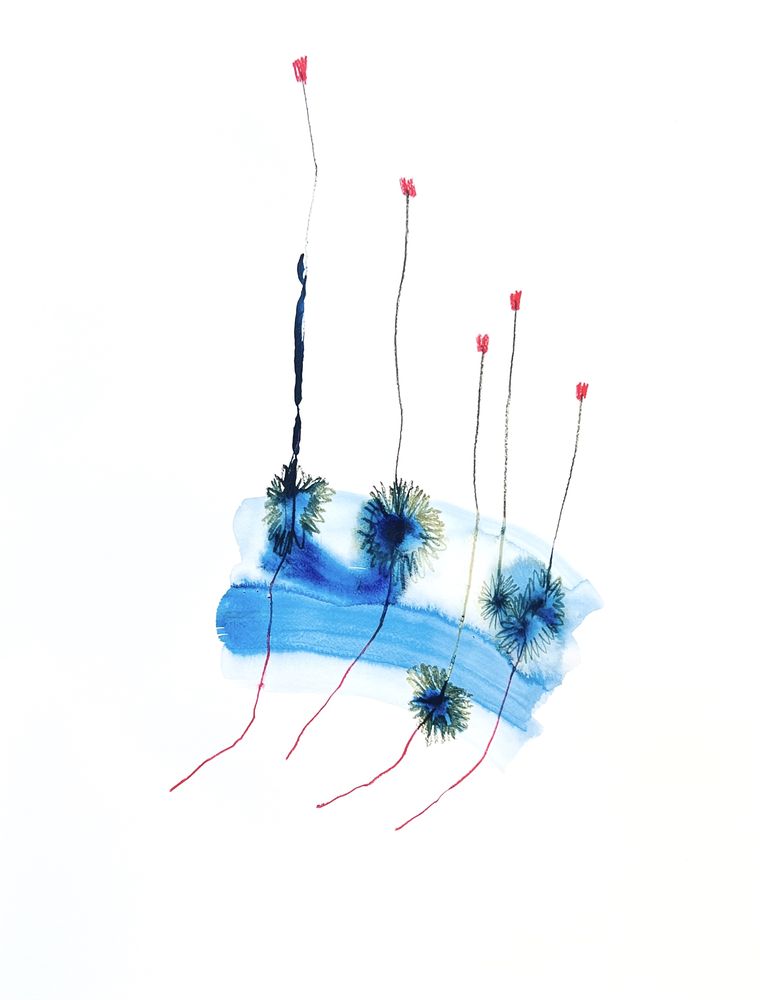

Découpe 12026Acrílico diluido sobre papel, lápiz acuarelableDimensiones variables, aproximadamente 120 × 30 cm
Découpe 22026Acrílico diluido sobre papel, lápiz acuarelableDimensiones variables, aproximadamente 160 × 30 cm
Découpe 32026Acrílico diluido sobre papel, lápiz acuarelableDimensiones variables, aproximadamente 100 × 20 cm
 Série Retour aux Sources IV2026Pigmentos acrílicos, tinta, lápiz acuarelable sobre papel60 × 55 cm
Réceptacle 22026Gres esmaltado · pieza única en la frontera entre escultura y objeto funcional32 × 33 × 10 cm
Réceptacle bleue2026Gres esmaltado · pieza única en la frontera entre escultura y objeto funcional40 × 40 × 15 cm